Link naar pagina: https://geoapps.noord-holland.nl/GeoWeb/Viewer/?app=e2c27be6ea4c4dfa8cf833d5072d4f64 Geen nieuwe bevindingen.
Samenvatting
Wij hebben de content van de website geoapps.noord-holland.nl onderzocht tussen 5 en 13 november 2025. Op dit moment zijn 26 van de 33 relevante succescriteria als voldoende beoordeeld. In dit rapport lees je wat er bij de overige 7 nog fout gaat, en hoe je dat kunt verbeteren.
In opdracht van

-
Voldoet
-
Afgekeurd
55
Totaal
- voldoet
Impact
Klein: 0
Medium: 0
Groot: 0
Type
Content: 0
Techniek: 0
Waarneembaar
- van 20
Bedienbaar
- van 20
Begrijpelijk
- van 13
Robuust
- van 2
Deze SC zijn afgekeurd:
Over dit onderzoek
- Onderzocht door
- Proper Access
- Opdrachtgever
- provincie Noord-Holland
- Leverancier techniek
- Arcgis
- Datum rapport
- 13 november 2025
- Standaard
- WCAG 2.2
- Methodologie
- WCAG-EM
Scope van het onderzoek
- Alle pagina's op de website geoapps.noord-holland.nl
Buiten scope:
- Subwebsite(s) waarbij de HTML en/of het systeem afwijkt van de onderzochte website
- De van derden afkomstige inhoud (wettelijke uitzondering voor de overheid)
Basisniveau toegankelijkheidsondersteuning
- Mozilla Firefox, versie 142
- Google Chrome, versie 140
- Apple Safari, versie 18
- NVDA schermlezer in combinatie met Firefox
- VoiceOver schermlezer in combinatie met Safari
- Andere gangbare browsers en hulpapparatuur
Technologieën van de website
- HTML
- CSS
- JavaScript
- WAI-ARIA
- SVG
Voortgang opgeloste bevindingen
Samenwerken met je team
Exporteer alle bevindingen als CSV-bestand. Je kunt het in een (online) spreadsheet inladen om met je team samen te werken.
Importeer in Jira
Exporteer alle bevindingen als Jira-compatibel CSV-bestand. Je kunt het direct importeren via Jira > Issues > Import issues from CSV.
Zelf bijhouden in de browser
Houd per bevinding bij of het is opgelost. Je voortgang wordt opgeslagen in jouw browser. Niemand anders kan je resultaat zien.
0 van
0 opgelost
Gevonden problemen
Filter bevindingen op:
Impact:
Type:
Status:
Geen bevindingen gevonden voor dit filter.
Link naar pagina: https://geoapps.noord-holland.nl/kaarten/kaartendata.html
#1 - Kleurcontrast van tekst is te laag (tekst kleiner dan 24px en niet vetgedrukt)
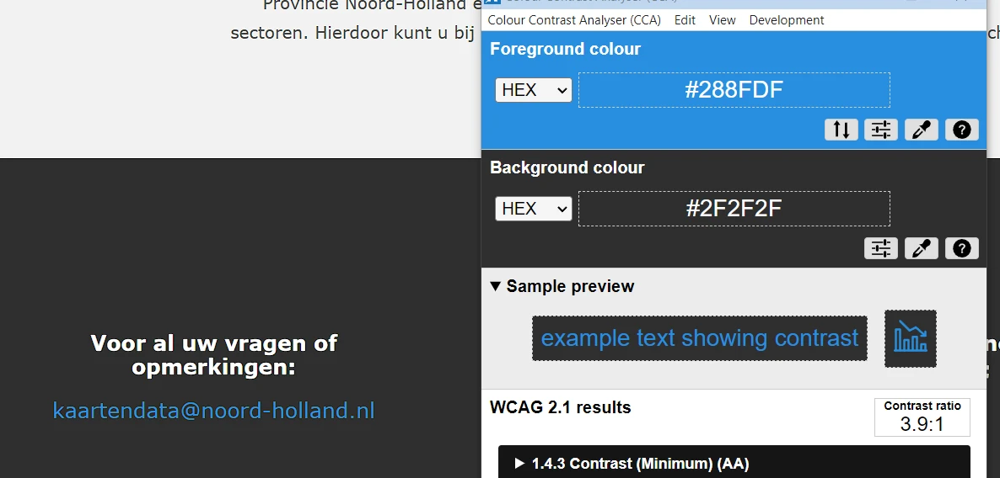
Op deze pagina staan in de footer sociale-media-logo’s die functioneren als links, maar het tekstalternatief ontbreekt, waardoor de links niet toegankelijk zijn. De afbeelding is dus interactief. Er is geen tekstalternatief. Daardoor heeft de link geen inhoud. Dit probleem is ook afgekeurd onder succescriterium 2.4.4, omdat de link geen doel heeft, en onder succescriterium 4.1.2, omdat de link geen toegankelijke naam heeft.
Oplossing:
Om deze link toegankelijk te maken, moet de afbeelding een tekstalternatief krijgen dat het linkdoel beschrijft. Zo weten bezoekers die schermlezers gebruiken waar de link naartoe leidt.
#2 - Kleurcontrast van tekst is niet voldoende bij toetsenbordfocus en als de muiscursor erover beweegt
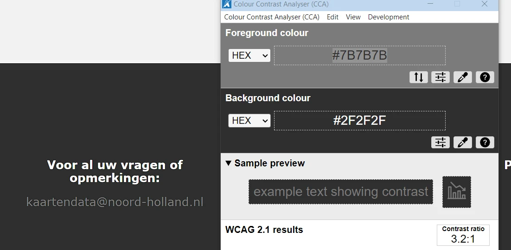
Op deze pagina wordt de tekst “Welkom bij het portaal Kaart en Data … kerncijfers bekijken” gebruikt als kop, maar deze is onjuist opgemaakt met een h3-element om een specifiek visueel effect te bereiken.
Het kop-element (h3) is niet betekenisvol gebruikt, maar alleen om een visueel effect te bereiken. De tekst die als kop is gemarkeerd, is geen echte kop. Er staat namelijk geen inhoud onder. Maar door het h3-element krijgt de tekst wel deze betekenis. Kop-elementen zijn bedoeld om structuur te geven aan de informatie op een pagina. Mensen die schermlezers gebruiken, vertrouwen op de koppen om door de pagina te navigeren en de opbouw te begrijpen. Gebruik kop-elementen daarom niet alleen om een visueel effect te bereiken, zoals een grotere, schuin- of vetgedrukte tekst. Zorg dat de tekst die je in een kop-element zet ook echt de functie van kop of tussenkop heeft.
Hetzelfde probleem doet zich hieronder voor bij de teksten “Klik op het betreffende onderwerp in het linker zijpaneel voor de individuele productpagina's” en “Voor vragen, opmerkingen of opdrachten kunt u terecht bij kaartendata@noord-holland.nl”.
Oplossing:
Verwijder het h3-element en gebruik een ander element, zoals een p-element. De gewenste stijl kun je met CSS toevoegen. Op deze pagina staat een instructie hoe je zelf koppen op een webpagina kunt testen: https://properaccess.nl/zo-controleer-je-de-koppenstructuur-van-je-website/.
img-element heeft geen alt-attribuut
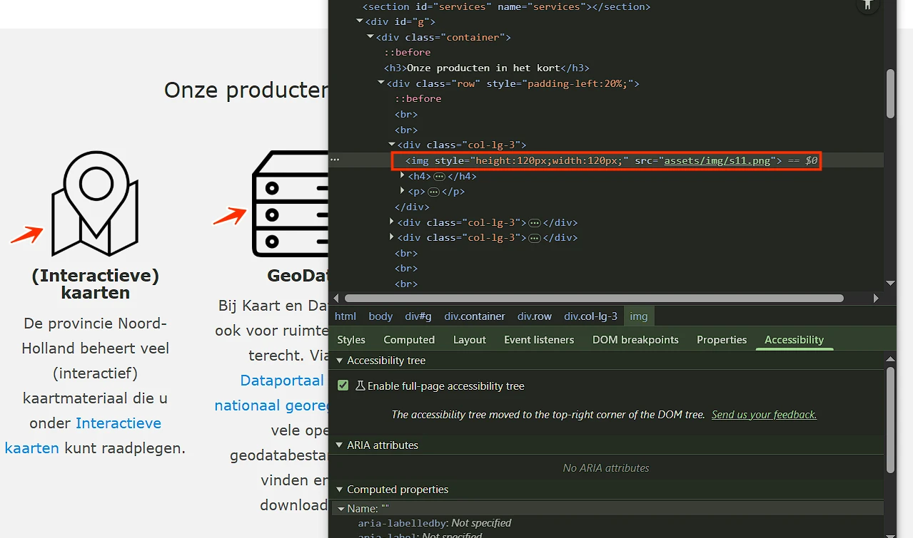
Op deze pagina staan onder de kop “Onze producten in het kort” lichtblauwe (#288FDF) links op een grijze (#F2F2F2) achtergrond, bijvoorbeeld “Interactieve kaarten”. De contrastratio is te laag: 3,1:1.
Oplossing:
Deze tekst is kleiner dan 24px en niet vetgedrukt, daarom moet het contrast minimaal 4,5:1 zijn. Op deze pagina staat een instructie die uitlegt hoe je kleurcontrast kunt testen: https://properaccess.nl/hoe-test-ik-kleurcontrast/.
#3 - Kleurcontrast van tekst is niet voldoende bij toetsenbordfocus en als de muiscursor erover beweegt
Op deze pagina staan onder de kop “Onze producten in het kort” links, bijvoorbeeld “Interactieve kaarten”. De tekst van deze links verandert naar grijs (#7B7B7B) op een lichtgrijze (#F2F2F2) achtergrond wanneer de link toetsenbordfocus krijgt. De contrastratio van deze tekst is 3,8:1.
Tekst van informatieve elementen zoals links en knoppen moet altijd voldoende contrast hebben, ook als het element toetsenbord focus krijgt of als de bezoeker met de muiscursor over het element beweegt (hover).
Hetzelfde probleem doet zich hieronder voor bij de links onder de kop “Handige links”. Grijze (#7B7B7B) links op een donkergrijze (#2C282A) achtergrond hebben een contrastratio van 3,4:1.
Oplossing:
Zorg dat de tekst ook als de muis overheen gaat minimaal een contrast van 4,5:1 heeft met de achtergrond. Op deze pagina staat een instructie die uitlegt hoe je kleurcontrast kunt testen: https://properaccess.nl/hoe-test-ik-kleurcontrast/.
#4 - Links alleen door kleur te onderscheiden van gewone tekst
Op deze pagina staat onder de kop “Onze producten in het kort” een alinea met links, bijvoorbeeld “Interactieve kaarten”. Kleur is het enige verschil tussen de link en de gewone tekst. Deze links zijn alleen te herkennen aan een kleurverschil met de gewone tekst. Dit kan een probleem zijn voor kleurenblinde of slechtziende bezoekers. Zij kunnen de kleuren mogelijk niet onderscheiden en zien dan niet dat er een link in de tekst staat. Hetzelfde probleem doet zich hieronder voor in de tekst “Voor vragen, opmerkingen of opdrachten kunt u terecht bij kaartendata@noord-holland.nl”.
Oplossing:
Zorg ervoor dat links in de tekst op zijn minst op één andere manier te herkennen zijn die niet afhankelijk is van kleur. Bijvoorbeeld:
- Onderstrepen: geef de links een onderstreping.
- Rand: voeg een subtiele rand (kader) toe aan de links.
- Verhoogd contrast + hover-effect: verhoog het contrast tussen de kleur van de links en de omringende tekst tot minimaal 3,0:1, en voeg een tweede visuele indicator toe bij hover, zoals een onderstreping of verandering in de achtergrondkleur.
#5 - Er staan twee koppen van hetzelfde niveau direct onder elkaar
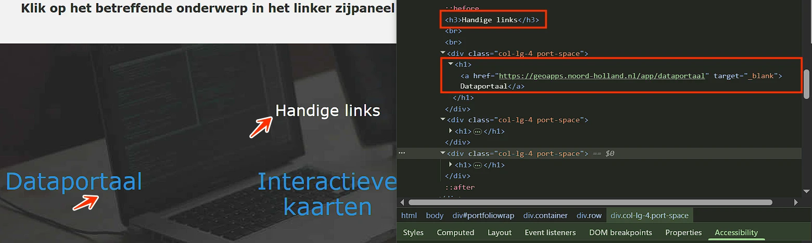
Link naar pagina: https://geoapps.noord-holland.nl/GeoWeb/Viewer/?app=09899f04a6034d12b189b38bf0b48ef6 Geen nieuwe bevindingen.
Link naar pagina: https://geoapps.noord-holland.nl/GeoWeb/Viewer/?app=57caf87442ad4cc3acb5249fff7b59cd Geen nieuwe bevindingen.
Link naar pagina: https://geoapps.noord-holland.nl/GeoWeb/Viewer/?app=606075c8f75c4bb8beea5e9ff518cca9
strong-element is gebruikt voor opmaak
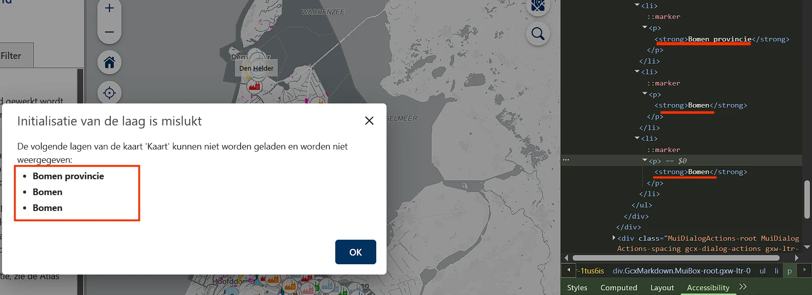
Link naar pagina: https://geoapps.noord-holland.nl/GeoWeb/Viewer/?app=bea8cc5a67b24ca7bc975c3fd963132f Geen nieuwe bevindingen.
Link naar pagina: https://geoapps.noord-holland.nl/GeoWeb/Viewer/?app=f05bcee389e6487da696abec378f08b6 Geen nieuwe bevindingen.
Link naar pagina: https://geoapps.noord-holland.nl/kaarten/interactieve_kaarten.htm
#6 - Kleurcontrast van tekst is te laag (tekst kleiner dan 24px en niet vetgedrukt)
Op deze pagina staat rode (#FF0000) tekst “Selecteer een thema” op een witte achtergrond. De contrastratio is te laag: 4:1.
Oplossing:
Deze tekst is kleiner dan 24px en niet vetgedrukt, daarom moet het contrast minimaal 4,5:1 zijn. Op deze pagina staat een instructie die uitlegt hoe je kleurcontrast kunt testen: https://properaccess.nl/hoe-test-ik-kleurcontrast/.
#7 - Kleurcontrast van tekst is te laag (tekst kleiner dan 24px en niet vetgedrukt)
Op deze pagina staan onder de tekst “Selecteer een thema” grijze (#808080) links, bijvoorbeeld “Veelgevraagde kaarten”, op een witte achtergrond. De contrastratio is te laag: 3,9:1.
Oplossing:
Deze tekst is kleiner dan 24px en niet vetgedrukt, daarom moet het contrast minimaal 4,5:1 zijn. Op deze pagina staat een instructie die uitlegt hoe je kleurcontrast kunt testen: https://properaccess.nl/hoe-test-ik-kleurcontrast/.
#8 - Kop is niet gemarkeerd als koptekst
Op deze pagina is de volgende tekst niet opgemaakt als kop: “Selecteer een thema”. Bezoekers die hulpsoftware gebruiken hebben niets aan een (tussen)kop die er wel uitziet als kop, maar niet als kop is gemarkeerd. Via de koppen op een pagina kunnen gebruikers van hulpsoftware de inhoud scannen of snel naar een bepaalde sectie springen. Maar dat kan alleen als de kop ook echt in de code staat. Als koppen alleen visueel als kop zijn vormgegeven (bijvoorbeeld vetgedrukt), ontstaat bovendien nog een ander probleem: de structuur van de informatie in de code wijkt dan af van de visuele structuur. Op deze pagina staat een instructie hoe je zelf koppen op een webpagina kunt testen: https://properaccess.nl/zo-controleer-je-de-koppenstructuur-van-je-website/.
Oplossing:
Dit voorkom je door koppen altijd te markeren met het juiste HTML-element, op het juiste kopniveau: h1, h2, h3, h4, h5 of h6. Meestal kun je het kopniveau kiezen via de content-editor in je CMS. De HTML-code voor de kop wordt dan automatisch toegepast.
#9 - De afbeelding is een link, maar heeft een slecht tekstalternatief
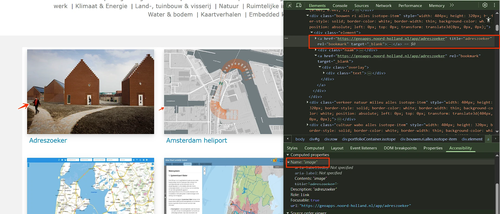
Op deze pagina staat in de artikelen blauwe (#008CBA) tekst op een witte achtergrond, bijvoorbeeld “Adreszoeker”. De contrastratio is te laag: 3,8:1.
Oplossing:
Deze tekst is kleiner dan 24px en niet vetgedrukt, daarom moet het contrast minimaal 4,5:1 zijn. Op deze pagina staat een instructie die uitlegt hoe je kleurcontrast kunt testen: https://properaccess.nl/hoe-test-ik-kleurcontrast/.
#10 - Relatie tussen links in een groep is niet in HTML vastgelegd
Op deze pagina staat onder de tekst “Selecteer een thema” een groep links die visueel als een groep wordt weergegeven, maar deze groepering is niet terug te vinden in de HTML-structuur. Als het voor een ziende bezoeker duidelijk is dat een groep links bij elkaar hoort, dan moet die structuur ook in de HTML-code aanwezig zijn.
Oplossing:
Neem de elementen op in een ul- of nav-element.
Link naar pagina: https://geoapps.noord-holland.nl/GeoWeb/Viewer/?app=ea7e18b8b1c8472cad77d8e9c4c6f423 Geen nieuwe bevindingen.
Link naar pagina: https://geoapps.noord-holland.nl/GeoWeb/Viewer/?app=39ae166eac894d3a828daf0070d79d76 Geen nieuwe bevindingen.
Link naar pagina: https://geoapps.noord-holland.nl/GeoWeb/Viewer/?app=bc9f6978df624fa0951b2a34592012f2 Geen nieuwe bevindingen.
Link naar pagina: https://geoapps.noord-holland.nl/GeoWeb/Viewer/?app=3f8f7b27db6a4bf1a41c040fd8ca3f93
#11 - Opsomming is niet opgebouwd met het HTML-element ul of ol
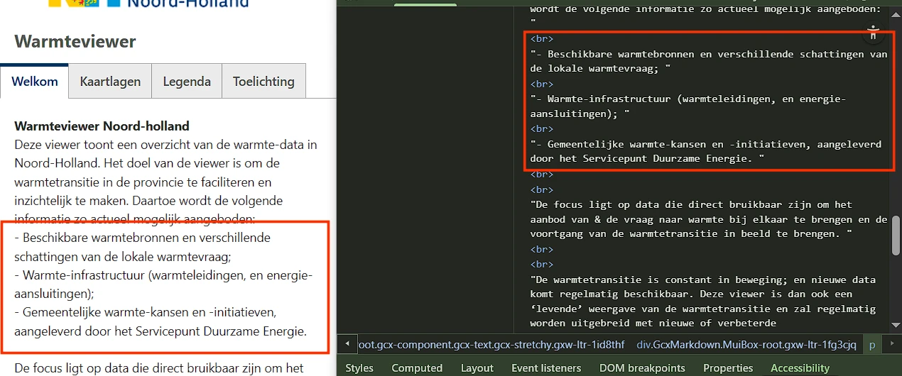
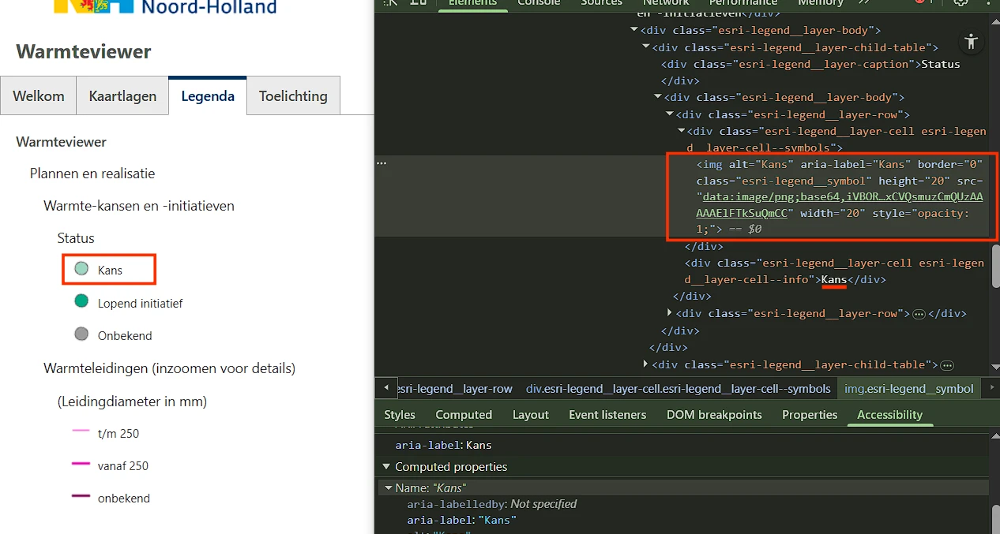
- op de pagina https://geoapps.noord-holland.nl/GeoWeb/Viewer/?app=606075c8f75c4bb8beea5e9ff518cca9;
- op de pagina https://geoapps.noord-holland.nl/GeoWeb/Viewer/?app=f05bcee389e6487da696abec378f08b6;
- op de pagina https://geoapps.noord-holland.nl/GeoWeb/Viewer/?app=e2c27be6ea4c4dfa8cf833d5072d4f64 in de legenda, na het aanvinken van de selectievakjes; en op andere pagina’s.
Oplossing:
Laat het alt-attribuut leeg om herhaling van de tekst te voorkomen (alt=””).
Link naar pagina: https://geoapps.noord-holland.nl/GeoWeb/Viewer/?app=ebb3d09222e34c14b49cdb13c7df6793 Geen nieuwe bevindingen.
Link naar pagina: https://geoapps.noord-holland.nl/GeoWeb/Viewer/?app=abb4f14c987f48359a437aa3484ad003
#12 - Het contrast van het selectievakje is te laag
Op deze pagina staat in de sectie “Filter” een grijs (#B1B1B1) selectievakje “Geavanceerde modus” op een witte achtergrond. De contrastratio van 2,1:1 is te laag. Bezoekers met een beperkt gezichtsvermogen kunnen dit selectievakje niet goed zien.
Hetzelfde probleem doet zich voor op de pagina https://geoapps.noord-holland.nl/GeoWeb/Viewer/?app=606075c8f75c4bb8beea5e9ff518cca9 in de sectie “Filter”.
Oplossing:
Zorg voor een minimaal contrast van 3,0:1.
img-element heeft geen alt-attribuut
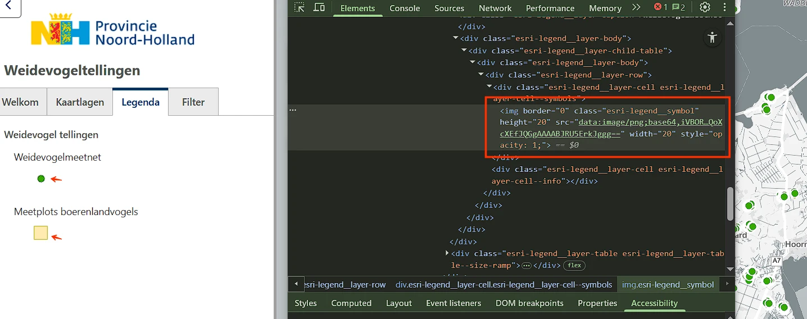
- op de pagina https://geoapps.noord-holland.nl/GeoWeb/Viewer/?app=ebb3d09222e34c14b49cdb13c7df6793;
- op de pagina https://geoapps.noord-holland.nl/GeoWeb/Viewer/?app=bc9f6978df624fa0951b2a34592012f2;
- op de pagina https://geoapps.noord-holland.nl/GeoWeb/Viewer/?app=39ae166eac894d3a828daf0070d79d76; en op andere pagina’s.
Oplossing:
Voeg het alt-attribuut toe aan het img-element. Bij een decoratieve afbeelding laat je de waarde leeg. Dan staat er alt="".
Link naar pagina: https://geoapps.noord-holland.nl/GeoWeb/Viewer/?app=c5a59e52b1724bc1bb9bd5cd8b966b35
strong-element is gebruikt in koptekst
Op deze pagina staat de kop “Woningbouwlocaties”. In deze kop worden het heading-element en het strong-element gebruikt. Het strong-element heeft een semantische waarde. Het geeft een bepaalde betekenis aan de tekst die erin staat, namelijk dat de tekst extra nadruk moet krijgen. Om die reden mag dit element niet worden gebruikt om alleen een visueel effect te bereiken (vetgedrukt). Hetzelfde probleem doet zich voor op
- de pagina https://geoapps.noord-holland.nl/GeoWeb/Viewer/?app=abb4f14c987f48359a437aa3484ad003 met “Weidevogeltellingen”,
- op de pagina https://geoapps.noord-holland.nl/GeoWeb/Viewer/?app=ebb3d09222e34c14b49cdb13c7df6793 met “Waterrecreatie”,
- op de pagina https://geoapps.noord-holland.nl/GeoWeb/Viewer/?app=3f8f7b27db6a4bf1a41c040fd8ca3f93 met “Warmteviewer” en op andere pagina’s.
Oplossing:
Gebruik CSS om de tekst vetgedrukt te maken, en verwijder het strong-element.
strong-element in plaats van kop-element
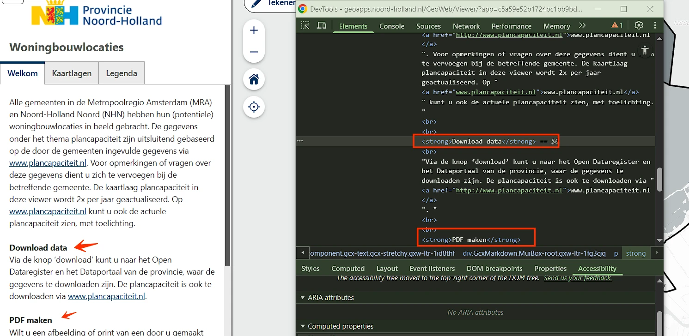
- op de pagina https://geoapps.noord-holland.nl/GeoWeb/Viewer/?app=abb4f14c987f48359a437aa3484ad003, bijvoorbeeld bij “Inleiding”;
- op de pagina https://geoapps.noord-holland.nl/GeoWeb/Viewer/?app=ebb3d09222e34c14b49cdb13c7df6793, bijvoorbeeld bij “Contact”;
- op de pagina https://geoapps.noord-holland.nl/GeoWeb/Viewer/?app=3f8f7b27db6a4bf1a41c040fd8ca3f93, bijvoorbeeld bij “Warmteviewer Noord-Holland”; en op andere pagina’s.
Oplossing:
Verwijder het strong-element en gebruik de juiste kop-elementen om deze koppen te markeren, zoals h2 of h3.
#13 - Visueel meerdere alinea’s, in de code maar één
Op deze pagina is in de sectie “Welkom” een tekstblok met meerdere alinea’s onjuist opgemaakt als één enkel p-element: “Om de resultaten van deze bescherming te … Weidevogeltellingen”. Visueel lijkt de tekst uit meerdere alinea’s te bestaan: blokjes tekst met witruimtes ertussen. Deze structuur moet ook in de code aanwezig zijn. Hetzelfde probleem doet zich voor
- op de pagina https://geoapps.noord-holland.nl/GeoWeb/Viewer/?app=3f8f7b27db6a4bf1a41c040fd8ca3f93 in de sectie “Welkom”;
- op dezelfde pagina in de sectie “Toelichting”;
- op de pagina https://geoapps.noord-holland.nl/GeoWeb/Viewer/?app=bc9f6978df624fa0951b2a34592012f2; en op andere pagina’s.
Oplossing:
Plaats elke alinea in een eigen p-element. Het aantal alinea’s dat je visueel ziet, moet dus gelijk zijn aan het aantal p-elementen in de code.
#14 - Alleen kleur gebruikt in legenda bij kaart
Op deze pagina wordt alleen kleur gebruikt in de legenda en op de kaart om informatie over te brengen. Zie de paarse kleur in de legenda en op de kaart. Alleen als je de kleuren kunt zien en van elkaar kunt onderscheiden, zie je welke balk of lijn bij welke categorie in de legenda hoort. Hetzelfde probleem doet zich voor
- op de pagina https://geoapps.noord-holland.nl/GeoWeb/Viewer/?app=abb4f14c987f48359a437aa3484ad003 in de legenda bij het aanvinken van de selectievakjes;
- op de pagina https://geoapps.noord-holland.nl/GeoWeb/Viewer/?app=ebb3d09222e34c14b49cdb13c7df6793;
- op de pagina https://geoapps.noord-holland.nl/GeoWeb/Viewer/?app=3f8f7b27db6a4bf1a41c040fd8ca3f93; en op andere pagina’s.
Oplossing:
Gebruik naast kleur bijvoorbeeld ook verschillende soorten arcering of datalabels in tekst.
#15 - Kleurcontrast tussen lijnen of balken in legenda en kaart is niet voldoende
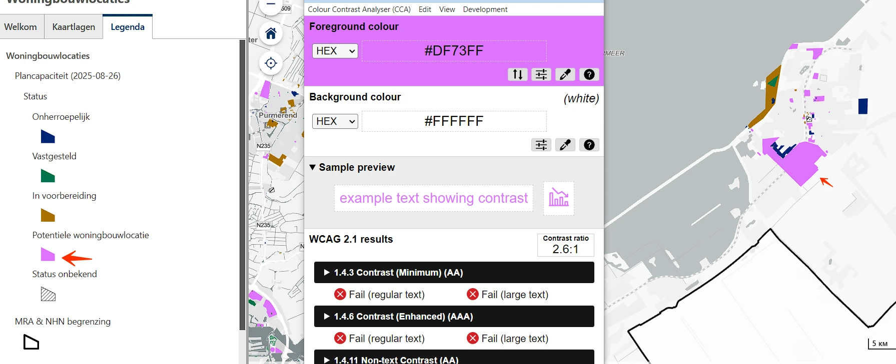
- op de pagina https://geoapps.noord-holland.nl/GeoWeb/Viewer/?app=abb4f14c987f48359a437aa3484ad003 in de legenda bij het aanvinken van de selectievakjes;
- op de pagina https://geoapps.noord-holland.nl/GeoWeb/Viewer/?app=ebb3d09222e34c14b49cdb13c7df6793;
- op de pagina https://geoapps.noord-holland.nl/GeoWeb/Viewer/?app=3f8f7b27db6a4bf1a41c040fd8ca3f93; en op andere pagina’s.
Oplossing:
Zorg dat het contrast tussen informatieve elementen van een grafiek minimaal 3,0:1 is, zodat bezoekers ze van elkaar kunnen onderscheiden. Controleer of alle kleuren in de grafiek voldoende contrast hebben.
#16 - De accordion heeft geen koppen of de rol van kop is overschreven
Op deze pagina staan in de sectie “Kaartlagen” onderdelen met verborgen inhoud, bijvoorbeeld “Plancapaciteit (2025-08-26)” en andere. De elementen die deze verborgen inhoud openen en sluiten, zijn niet als kop gemarkeerd. De teksten waarmee je delen van een accordeon kunt inklappen en uitklappen, fungeren als koppen voor die delen. Daarom moeten deze teksten ook de rol van kop hebben. Het gaat mis wanneer deze teksten in de code niet als kop zijn gemarkeerd met een h-element, zoals h2 of h3. Hetzelfde probleem doet zich voor
- op de pagina https://geoapps.noord-holland.nl/GeoWeb/Viewer/?app=abb4f14c987f48359a437aa3484ad003;
- op de pagina https://geoapps.noord-holland.nl/GeoWeb/Viewer/?app=ebb3d09222e34c14b49cdb13c7df6793;
- op de pagina https://geoapps.noord-holland.nl/GeoWeb/Viewer/?app=3f8f7b27db6a4bf1a41c040fd8ca3f93; en op andere pagina’s.
Oplossing:
Markeer deze teksten als kop of zorg dat de bestaande rol van kop niet wordt overschreven. Meer informatie over dit element staat op deze pagina: https://www.w3.org/WAI/ARIA/apg/patterns/accordion/.
strong-element is gebruikt voor opmaak
Op deze pagina staat onderaan de kaart een knop “Meer info” die een dialoogvenster opent. In dit dialoogvenster wordt het strong-element onjuist gebruikt voor opmaakdoeleinden, bijvoorbeeld bij “WCAG 2.1 AA standaard”. Het strong-element heeft een semantische waarde: het geeft een bepaalde betekenis aan de tekst die erin staat. Dit element geeft aan dat de tekst extra nadruk moet krijgen. Om die reden mag dit element niet worden gebruikt om alleen een visueel effect te bereiken (vetgedrukte tekst). Hetzelfde probleem doet zich voor
- op de pagina https://geoapps.noord-holland.nl/GeoWeb/Viewer/?app=abb4f14c987f48359a437aa3484ad003;
- op de pagina https://geoapps.noord-holland.nl/GeoWeb/Viewer/?app=ebb3d09222e34c14b49cdb13c7df6793;
- op de pagina https://geoapps.noord-holland.nl/GeoWeb/Viewer/?app=3f8f7b27db6a4bf1a41c040fd8ca3f93; en op andere pagina’s.
Oplossing:
Verwijder de onnodige strong-elementen en gebruik CSS om de tekst vet te maken.
strong-element in plaats van kop-element
Op deze pagina staat onderaan de kaart een knop “Meer info” die een dialoogvenster opent. In dit dialoogvenster is de tekst “Webrichtlijnen” onjuist opgemaakt met strong in plaats van met het juiste kop-element. Het strong-element is niet bedoeld om koppen mee te markeren. Dat moet altijd gebeuren met een kop-element, zoals h2. Koppen gebruik je om een tekst te structureren. Alleen als je ze als kop markeert met een kop-element, begrijpt hulpsoftware die betekenis. Het strong-element gebruik je wanneer je nadruk wilt geven aan enkele woorden of een zinsdeel. Hetzelfde probleem doet zich voor
- op de pagina https://geoapps.noord-holland.nl/GeoWeb/Viewer/?app=abb4f14c987f48359a437aa3484ad003;
- op de pagina https://geoapps.noord-holland.nl/GeoWeb/Viewer/?app=ebb3d09222e34c14b49cdb13c7df6793;
- op de pagina https://geoapps.noord-holland.nl/GeoWeb/Viewer/?app=3f8f7b27db6a4bf1a41c040fd8ca3f93; en op andere pagina’s.
Oplossing:
Verwijder het strong-element en gebruik de juiste kop-elementen om deze koppen te markeren, zoals h2 of h3.
#17 - Kop is niet gemarkeerd als koptekst
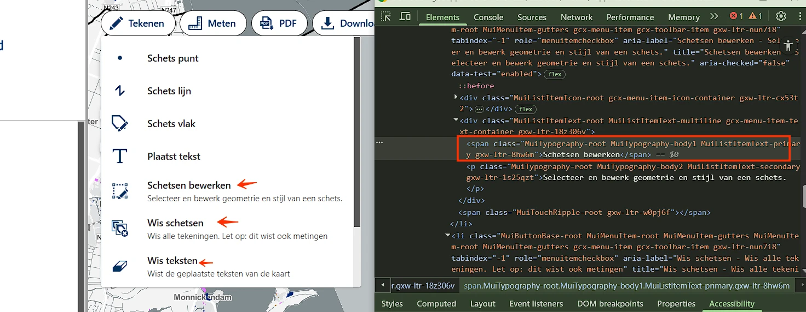
- op de pagina https://geoapps.noord-holland.nl/GeoWeb/Viewer/?app=abb4f14c987f48359a437aa3484ad003;
- op de pagina https://geoapps.noord-holland.nl/GeoWeb/Viewer/?app=ebb3d09222e34c14b49cdb13c7df6793;
- op de pagina https://geoapps.noord-holland.nl/GeoWeb/Viewer/?app=3f8f7b27db6a4bf1a41c040fd8ca3f93; en op andere pagina’s.
Oplossing:
Dit voorkom je door koppen altijd te markeren met het juiste HTML-element, op het juiste kopniveau: h1, h2, h3, h4, h5 of h6. Meestal kun je het kopniveau kiezen via de content-editor in je CMS. De HTML-code voor de kop wordt dan automatisch toegepast.
Over dit onderzoek
Leeswijzer
Onze rapporten zijn anders. Bij het bespreken van de gevonden problemen volgen wij niet de structuur van de norm, maar die van jouw website of app. Hierdoor kun je gewoon per pagina of scherm aan de slag gaan. Wel zo makkelijk! Je vindt verderop een overzicht van alle pagina’s met problemen.
We geven je bij elk gevonden issue een paar voorbeelden, maar niet een complete lijst. Controleer zelf of het probleem ook nog op andere plekken voorkomt. Zie het rapport als een leidraad.
Gebruikte norm
Dit onderzoek laat zien in hoeverre de website op dit moment voldoet aan WCAG 2.2, niveau A en AA. WCAG staat voor Web Content Accessibility Guidelines. Dit is de internationale norm voor digitale toegankelijkheid. De Europese norm EN 301 549 bevat alle eisen van WCAG op niveau A en AA.
In dit rapport hebben we korte beschrijvingen van de succescriteria uit de norm opgenomen, met een algemene uitleg erbij. Wil je ze helemaal lezen? Bekijk dan de documentatie van WCAG.
Gebruikte onderzoeksmethode
We gebruiken de onderzoeksmethode WCAG-EM van het W3C. Het proces ziet er als volgt uit:
- vaststellen wat binnen en buiten scope valt
- vaststellen welke technologieën zijn gebruikt
- steekproef (sample) samenstellen
- steekproef onderzoeken
- gevonden issues beschrijven
Het grootste deel van het onderzoek doen we met de hand. Voor een deel van de toegankelijkheidseisen gebruiken we automatische tools als ondersteuning, zoals axe-core en Chrome Developer Tools.
Belangrijk om te weten
Dit rapport helpt je om de toegankelijkheid van je website te verbeteren. Maar let op: het is geen definitieve, volledige lijst van alle aanwezige toegankelijkheidsproblemen. Dat zit zo:
Het is een steekproef
Ten eerste is het onderzoek gebaseerd op een steekproef. Die is op een betrouwbare manier genomen, en de meeste problemen zullen daardoor zeker aan het licht komen. Toch kan een probleem net buiten de steekproef vallen. Bij een volgend onderzoek kan het wel ontdekt worden.
Op basis van falsificatie
We beoordelen vanuit het principe van falsificatie. Dat houdt in dat we proberen te bewijzen dat iets niet waar is, in plaats van te bevestigen dat het klopt. ‘Voldoet’ betekent daarom dat we geen reden hebben gevonden om een punt af te keuren. Maar als we later wél een reden vinden, kan het alsnog worden afgekeurd.
Voortschrijdend inzicht
Het komt voor dat de beoordeling van een succescriterium op detailniveau verandert. De norm beschrijft namelijk niet élk mogelijk scenario. Samen met andere onderzoeksbureaus overleggen we hoe we met bepaalde situaties omgaan. Zo kan iets dat nu wordt afgekeurd, soms bij een volgend onderzoek worden goedgekeurd en andersom.
Oplossen leidt tot nieuw probleem
Ten slotte kan het gebeuren dat bij het oplossen van een probleem onbedoeld een nieuw toegankelijkheidsprobleem ontstaat. Dat komt dan bij een volgend onderzoek pas naar voren.
Hoe werkt dit rapport?
Bevindingen bekijken en filteren
Alle gevonden toegankelijkheidsproblemen staan onder Gevonden problemen. Je kunt de bevindingen filteren op:
- Impact (Groot, Medium, Klein, Advies) — hoe ernstig is het probleem voor de gebruiker?
- Type (Content, Techniek) — moet de inhoud of de techniek worden aangepast?
- Status (Open, Opgelost) — welke problemen zijn al verholpen?
Voortgang bijhouden
Je kunt je voortgang op twee manieren bijhouden:
- CSV-export — exporteer alle bevindingen als CSV-bestand en laad het in een (online) spreadsheet om met je team samen te werken.
- Jira-export — exporteer alle bevindingen als Jira-compatibel CSV-bestand. Importeer het via Jira > Issues > Import issues from CSV. Bevindingen worden aangemaakt als bugs met prioriteit op basis van impact.
- Registreer in de browser — activeer deze optie om per bevinding bij te houden of het is opgelost. Je voortgang wordt opgeslagen in je browser. Niemand anders kan je resultaat zien. Let op: de voortgang is gekoppeld aan je browser. Als je een andere browser of een ander apparaat gebruikt, begint de telling opnieuw.
- Plan van aanpak — download een geprioriteerd plan van aanpak om de gevonden problemen stap voor stap op te lossen. Dit is beschikbaar bij audits vanaf maart 2026.
Link naar een specifieke bevinding delen
Bij elke bevinding verschijnt een link-icoon wanneer je er met de muis overheen gaat. Klik op dit icoon om de directe link naar die bevinding te kopiëren. Je kunt deze link plakken in een e-mail of chatbericht, bijvoorbeeld om een vraag te stellen aan Proper Access over een specifiek punt.